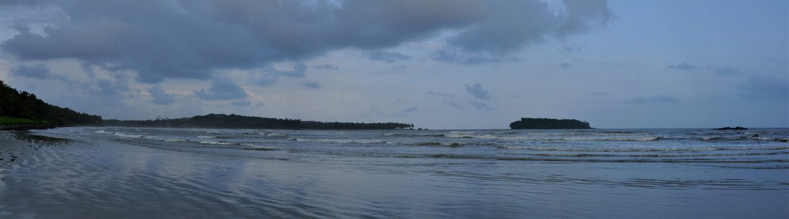

Muzhupilangad Beach
Kannur Colloctorate

Kannur
The Payyambalam Beach is an impeccably maintained destination in Kannur.
This secluded location is known for providing one with the opportunity
to simply relax or enjoy a family picnic in absolute tranquillity
Location: Payyambalam

Built by the first Portuguese Viceroy in India, Don Francesco de Almeida (1505), St.
Angelo’s Fort is among the most historic sites in Kannur.
Location: kannur

Pythalmala, also called Vaithalmala, is a hill station situated in the
Kannur region of Kerala. Snuggled in the Western Ghats, the trek takes you through dense forests
and opens up to a wide expanse that goes to the Pythalmala peak.
Location: Paithalmala
Ezharakund waterfalls in Kudianmala, Kannur is another emerging tourist destination
LocationEzharakundThe Vayalapra Floating Park or V-Pra Park is one of the beautiful picnic spots
in Kannur district to spend with family and children. the V-Pra Kaayal Floating Park offers
various tourism activities like Pedal Boating and Kayaking.
Location:
Vayalapra
Madayipara is an extremely beautiful laterite plateau which narrates unique tales of vibrant hues
in each season. This beautiful landscape creates wonders in colors.
Location:
Madayipara

The Kannur Lighthouse is located near the Payyambalam Beach,
a few kilometers from Kannur town, in Kerala state, south India.
Location:
Kannur
The Aralam Wildlife Sanctuary is located at a distance of about 35 km
from Thalassery and 60 km from the town of Kannur. Headquartered in Iritty (20 km away), the sanctuary was set up in 1984.
Location:
Aralam

The earliest evidence of human habitation in the district are rock-cut caves and megalithic burial sites of the Neolithic age. The Taliparamba-Kannur-Thalassery area abounds in rock-cut caves, dolmens, burial stone circles and menhirs, all of megalithic burial order. The district was part of the Chera kingdom, which ruled most of Kerala during the first several centuries CE. Later Kannur was the capital of the Kolattiri Rajas, whose kingdom had trading relations with Arabia and Persiain the 12th century and 13th centuries.
Payyannur was the main venue of the Salt Satyagraha, a major turning point in the Indian Freedom Movement, in Malabar. On 13 April 1930, a batch of Congress volunteers under the leadership of K. Kelappan started on foot from Kozhikode to the beaches of Payyannur and broke the salt laws there on April 21. The Satyagraha camp at Payyannur was raided and the campers were beaten up. The Uliyath Kadav Payyanur incident became a turning point in the history of freedom struggle in Kerala. It thrilled the people and thousands were ready to join in the struggle for freedom. There were widespread demonstrations in Kannur, Thalassery and other parts of the district and a number of Congress workers were arrested. In the late 17th century, the city was the capital of the Travancore kingdom that was ruled by the Varma dynasty. After forming the Travancore kingdom, Maharaja Marthanada Varma dedicated it to Lord Padmanabha, the presiding deity of Shri Padmanabhaswamy temple and named the city ‘Thiruvananthapuram’.
Kannur District played an important role in the Indian freedom movement. The Indian National Congress, founded in 1885, established a Malabar District committee in 1908. A branch of the All India Home Rule League, founded by Dr. Annie Besant, functioned in Thalassery during this period and among its active workers was V.K. Krishna Menon. By the end of 1939, a branch of the Communist Party of India was formally established at Pinarayi, a village near Thalassery. The word ‘Thiruvananthapuram’ is derived from the Malayalam word thiru- anantha-puram, which means ‘City of Lord Ananta’. Ananta is the serpent Shesha on whom Lord Padmanabha (another form of Lord Vishnu) reclines. During the British era, the name of the city was anglicized to Trivandrum and it was the official name of the city, until 1991, when the government renamed the city to Thiruvananthapuram.
This temple is one of the most important in Kerala and is on the banks of the River Valapattanam. The Parassini Madappura sree Muthappam Temple is dedicated to Sree Muthappan
Initially owned by the Dutch as a sugarcane garden and later changed hands and went to the British East India Company, it is locally known as the Odathil Palli or the Garden Mosque.
For our ancestors art is nothing but life. It is believed that art was their life’s gratification; so that it is very difficult to single out the folk art from their routine life. Kannur or Cannanore in North Kerala (Malabar) is proud of being one of the leading place which gives fore-most importance to folk arts and for preserving traditional and ancient cultures.